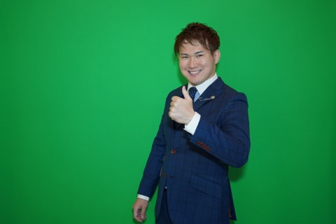
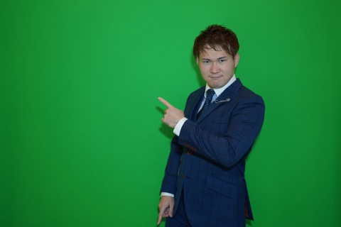
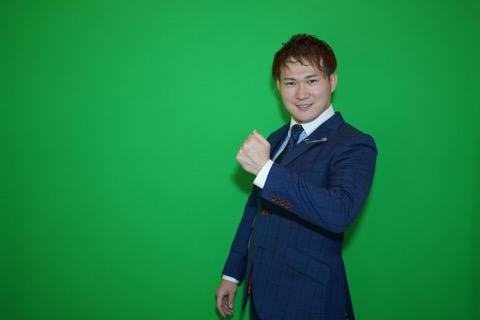
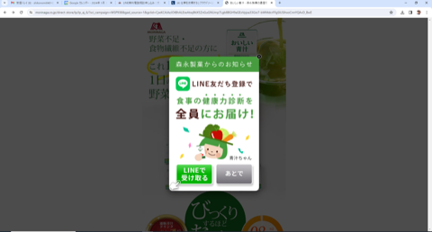
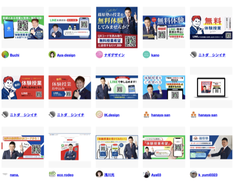

案件 07｜Web用画像
学習塾「篠原塾」のホームページ挿入画像
依頼主：篠原塾（大学受験生向けのオンライン個別指導）
依頼の概要
ホームページに入れる画像を4枚作る依頼です。クライアントは「1枚目の画像をサンプルとして見て選ぶ」としているので、演習ではまず1枚目を作り、時間があれば2枚目以降に進みます。写真と QR コードは提供素材を使います。
作る画像
| 1枚目 体験授業の申し込みページ（1920 × 1080 px） | 今ページの下部にあるマンガと小さな QR コードの代わりに入れる画像。塾長の画像（またはイラスト）と QR コードを使い、「体験を受けたい」と思った人が QR コードを読み込んで「体験授業希望」と送ればよい、とわかるようにする。細かい文言はおまかせ |
|---|---|
| 2枚目 LINE 無料電話相談の申し込みページ（1920 × 1080 px） | 1枚目と同じく、塾長の画像（またはイラスト）と QR コードを使い、「無料電話相談を受けたい」と思った人が QR コードを読み込んで「無料電話相談希望」と送ればよい、と言っているようにする。1枚目と似たデザインでよいが、まったく同じにはしない |
| 3枚目 ホームページ下部に表示する画像（500 × 500 px） | QR コードを表示し、LINE の ID「shikonomi33」を表示する。「体験授業はこちらから」「『ホームページ見ました！』と送ってください」と表記する（細かい文言はおまかせ） |
| 4枚目 ブラウザバック時に表示する画像 | popup_reference.png のように、ブラウザバックしたときに表示させる画像。QR コード（緑色のもの）を表示しつつ、「塾長・篠原の著書『手抜き勉強大全』200ページを無料プレゼント」と記載する |
デザインの方向性
- シンプルで、高級感・信頼性のある感じにする
- 配色は、ホームページで使われている色を参考にする
- 選定基準はクオリティを最優先
参考リンク
- 篠原塾のホームページ（配色の参考）https://shinoharajyuku.com/
- 1枚目を入れるページ（体験授業）https://shinoharajyuku.com/contact/
- 2枚目を入れるページ（LINE 無料電話相談）https://shinoharajyuku.com/line.html
素材
素材をまとめてダウンロード（ZIP・33.5 MB）全11点。1つずつ保存するときは、画像を開いて保存してください。
ロゴ・QRコード2点
写真・画像7点
- photo_0C9A2479.jpg
- photo_0C9A2551.jpg

photo_DSC03058.jpg
photo_DSC03096.jpg
photo_DSC03115.jpg- photo_studio250_2720.jpg
- photo_studio250_2724.jpg
参考資料1点

popup_reference.png
見本（他者の作品）1点
other_proposals.png はほかのデザイナーの応募作品です。似たデザインにならないよう、自分のラフを描いてから参考程度に見てください。

other_proposals.png
提出前のチェック
チェックの状態は、この端末のブラウザにだけ保存されます。